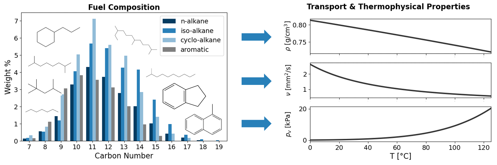

Welcome to FuelLib’s documentation!
The Fuel Library (FuelLib) utilizes the group contribution method (GCM), as developed by Constantinou and Gani[1] [2] in the mid-1990s with additions from Govindaraju and Ihme (2016)[3], to provide a systematic approach for estimating the thermodynamic properties of pure organic compounds and mixtures of organic compounds. If you need help or have questions, please use the GitHub discussion. The source code is available at github.com/NatLabRockies/FuelLib.
{kind=link}

Citing this work
If you use FuelLib in your research, please cite the following software record:
Montgomery, David, Appukuttan, Sreejith, Yellapantula, Shashank, Perry, Bruce, and Binswanger, Adam. FuelLib (Fuel Library) [SWR-25-26]. Computer Software. https://github.com/NatLabRockies/FuelLib. USDOE Office of Energy Efficiency and Renewable Energy (EERE), Office of Sustainable Transportation. Vehicle Technologies Office (VTO). 27 Feb. 2025. Web. doi:10.11578/dc.20250317.1.
Or in BibTeX format:
@misc{fuellib_2025,
title = {FuelLib (Fuel Library) [SWR-25-26]},
author = {Montgomery, David and Appukuttan, Sreejith and Yellapantula, Shashank and Perry, Bruce and Binswanger, Adam},
doi = {10.11578/dc.20250317.1},
url = {https://doi.org/10.11578/dc.20250317.1},
howpublished = {[Computer Software] \url{https://doi.org/10.11578/dc.20250317.1}},
year = {2025},
month = {feb}
}
Installation
The easiest way to install FuelLib is via pip:
pip install fuellib
After installation, several command-line tools will be available for exporting fuel data and plotting fuel properties. See the CLI Tutorials for detailed usage examples and options.
For more detailed information on a development setup, see the Contributing page.
Package Requirements
FuelLib requires:
numpy ≥1.19.0
pandas ≥1.0.0
scipy ≥1.5.0
matplotlib ≥3.0.0
Development tools (Sphinx, Black, pytest) are available for developers installing from source; see the installation instructions in the Contributing section.
Contents:
- Fuel Property Prediction Model
- Tutorials
- Source Code
- Contributing to FuelLib